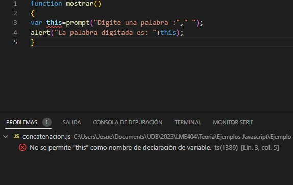

Como sucede en todo lenguaje de programacion, en Javascript existe una restriccion especial que debemos respetar al momento de elaborar su sintaxis.
Nos referimos a las palabras reservadas de Javascript. Son identificadores que poseen un significado en el compilador de
cualquier lenguaje de programación. Estas palabras pueden identificar los tipos de datos que se pueden usar, además de las diferentes
rutinas de programación que este lenguaje permite, por lo tanto, no pueden ser utilizadas para dar nombre a nuestros identificadores como variables, parametros, funciones, etc.
Listado de las principales palabras clave de JavaScript según el estándar ECMAScript más reciente
- await
- break
- case
- catch
- class
- const
- continue
- debugger
- default
- delete
- do
- else
- export
- alert
- extends
- finally
- for
- function
- if
- import
- in
- instanceof
- new
- return
- super
- switch
- this
- throw
- try
- typeof
- var
- void
- while
- with

Al utilizar la palabra clave this, el IDE Visual Studio Code no permite crear la variable con ese identificador.
Estas son palabras reservadas para una implementación a futuro en JavaScript y que no debemos utilizar, aunque actualmente nos permita su uso como identificadores.
- let
- byte
- private
- protected
- public
- static
- implement
- interface
Utilizando la instruccion let como un identificador de variable sin causar errores
Estas palabras reservadas se implementarían a futuro según versiones anteriores de ECMAScript (ECMAScript 1 a 3), finalmente no han sido utilizadas
- abstract
- boolean
- byte
- char
- double
- final
- float
- goto
- int
- long
- native
- short
- synchronized
- transient
- volatile